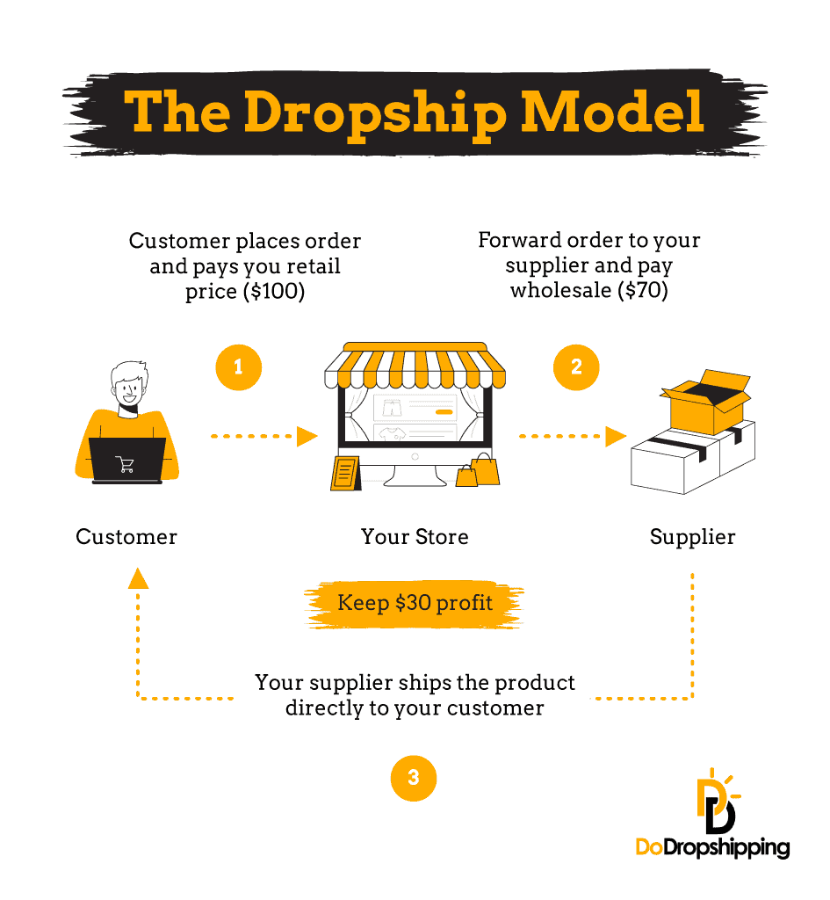
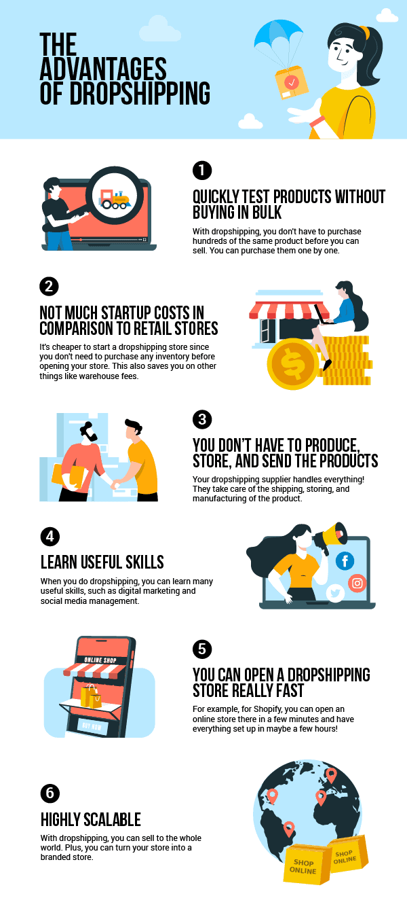

START A DROPSHIPPING BUSINESS IN NIGERIA
START A DROPSHIPPING BUSINESS IN NIGERIA
START A DROPSHIPPING BUSINESS IN NIGERIA
START A DROPSHIPPING BUSINESS IN NIGERIA
Dropshipping is a branch of Ecommerce, with a business model that allows entrepreneurs to sell products that are manufactured, warehoused and shipped by vendors from their own online store.
What this means is this:
And surprisingly, One may not even see the product at all.
Dropshipping is a great option for first-time entrepreneurs. It frees up time that can be refocused on marketing and provides a better way for small businesses to test out new product ideas without having to own and pay for the product upfront.
In short, dropshipping is the act of selling a product on your website without actually handling its fulfillment and shipping. Another key benefit of dropshipping is that one don’t pay for the product until the customer pays for it, making dropshipping an viable option for people who don't want to spend a lot on initial inventory or who don’t want to risk buying products that won’t sell. This low barrier to entry allows novices and professionals alike to pick a niche and run their own dropshipping-based ecommerce store.
A Pictorial View of how this works is in the image below:

In the pictorial description above,
Now, i want you to notice something exciting about this business model:
All was done automatically from the dropshipper's online store that is connected to a platform. All the dropshipper will do are:
This is where the work is. Just having an online store is not enough!!! A dropshipper has to know/have two skills, amongst other:
The advantages of this business model are these:
It is a very viable business model. Check out the further advantages of the dropshipping business model, as detailed in the picture below:

That is what this introductory tutorial is all about. How to make you a successful dropshipper.
Who is this course meant for?
DATE: Sunday 11th September 2022
TIME: 8:00PM Prompt
VENUE: WhatsApp
Click the button below to join the introductory class
Please join ONLY one group and ensure the previous group is filled before joining joining the next
This website is not a part of the Facebook website, Meta Inc. It is also not a part of The Google website, Alphabet Inc
Additionally, this site is not endorsed by Facebook or Google in any way. Facebook and Google is a trademark of Meta Inc and Alphabet Inc respectively